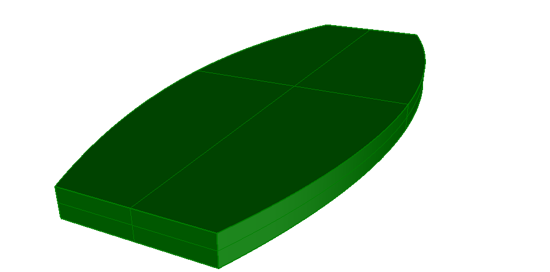

Link to this page
Link to this page| Format | ASCII | HTML |
|---|---|---|
| IFC-SPF | File | Markup |
| View |
|---|
| Common Use Definitions |
| Entity |
|---|
| IfcSlabStandardCase |
| IfcSlabType |
| IfcMaterialLayerSetUsage |
| IfcExtrudedAreaSolid |
| IfcIndexedPolyCurve |
This example illustrates a standard-case slab with extruded solid geometry, based on a material layer set usage definition. Figure 442 shows the resulting shape.
NOTE The extruded profile is defined by IfcIndexedPolyCurve
 |
|
Figure 442 — Standard case slab with material layer set. |
NOTE There is no color information within the file, the displayed color has been set by the target application as a default.